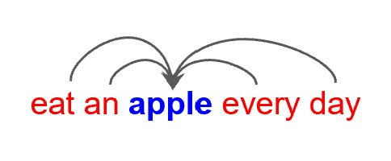
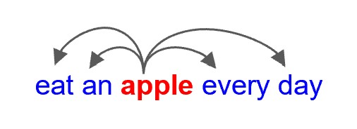

Chapter 3 词向量 Word Embedding¶
Note
词向量本质上是一个降维的过程。
3.1 计算机如何表示词义¶
分类词典¶
构建一个层次式分类的语义词典，描述词语之间的关系（WordNet）
缺点¶
- 难以描述同义词之间的微妙区别
- 新词无法及时更新
- 主观化
- 依赖人力构建和调整
- 难以准确计算词语相似度
独热编码 One-Hot Encoding¶
常用于离散变量表示。
缺点¶
- 词数过多，维度过高，占用空间大
- 同义词、近义词等关系无法表示（如搜索"Seattle motel"和"Seattle hotel"的结果理应相似，但"motel"和"hotel"的独热编码正交）
分布式表示 Distributional Similarity Based Representation¶
用一个更稠密的向量直接表示一个词。例如词库中总词数为50000，词向量维度为300，则每个词用一个300维的向量表示。
如何了解一个人？通过他的朋友了解。如何了解一个词的意思？通过它的上下文了解。
- 用MLP进行降维，目标约束是让同义词、近义词的向量距离更近（相似度更高）
- 如果多个词可以填在同一个上下文中，那么它们的含义就应该是相似的。
3.2 词向量模型¶
Tip
本节主要介绍 word2vec，Google在2013年提出的一个词向量模型，包含 CBOW(Continuous Bag of Word) 和 Skip-gram 两种方法。
两种方法¶
- CBOW：给定上下文，预测中心词
 - Skip-gram：给定中心词，预测上下文

词向量模型结构¶
以词库大小为50000，词向量维度为300为例：词向量模型接受的输入为独热编码，即50000维的向量；模型将其变换为词向量，即一个300维的向量；最后再变换为50000维的向量，经过softmax计算每个词的概率分布。
Note
可见word2vec事实上只是一个浅层神经网络，并不是一个深度学习模型。
论文贡献¶
层次Softmax Hierarchical Softmax¶
如果使用传统softmax，相当于在做50000分类，softmax计算量过大。
层次softmax用二叉树来表示词典，叶子节点是词，非叶子节点是二分类器，相当于做一个编码，从前往后一位一位预测。
- 缺点：不适合gpu并行计算.
负采样 Negative Sampling¶
每次找若干个负样本（不在上下文中的词）进行训练，给它们打低分。
3.3 词向量应用¶
- 计算相似度 Word Similarity
- 机器翻译 Machine Translation
- 命名实体识别 Part-of-Speech and Named Entity Recognition
- 关系抽取 Relation Extraction
- 情感分析 Sentiment Analysis
- 指代消歧 Co-reference Resolution
3.4 词向量的局限性¶
- 无法解决多义词问题
- 难以调试（比如我在实际应用中想把“红色”和“绿色”分开，但难以训练）
- 序列化问题（没考虑上下文词的顺序）